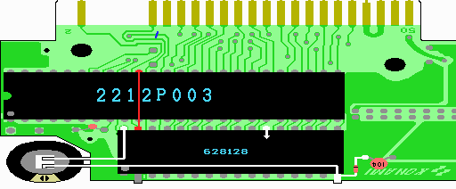

15．ゴールドキャパシタ
さて、いよいよ最後です。ゆとりあるコテさばきをしましょう。これらの部品の取り付け位置も、実体図を見れば分かるでしょう。

回路図とよく見比べてください。ゴールドキャパシタの＋側を適当な5Vとつなぎます。そして、−側はSRAMのGNDとつなぎます。また、SRAMのGNDからはダイオード1S1588を通して、基板のGNDにつなぎます。ダイオードはラインがはいっている方が基板のGND側にくるようにします。ダイオードやゴールドキャパシタの向きに気をつけて下さい。
ゴールドキャパシタは、カートリッジの箱の中で揺れるとその内にリード線が切れて、メモリーの内容が消えてしまうので、動かない様にティッシュを詰めるとか、両面テープで固定するとか、リード線でなく、スズメッキ線にチューブを被せて絶縁したものを使う等して、リード線が切れないような対策をしておくといいでしょう。
 次へ
次へ